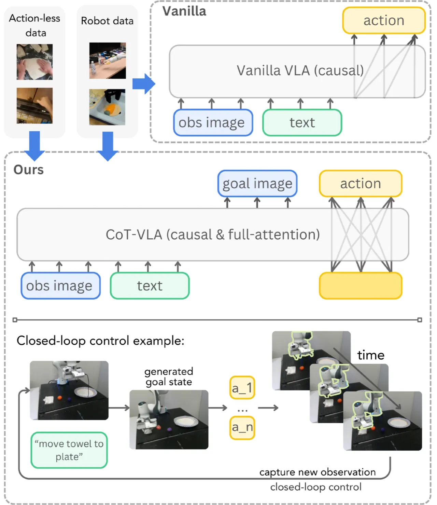
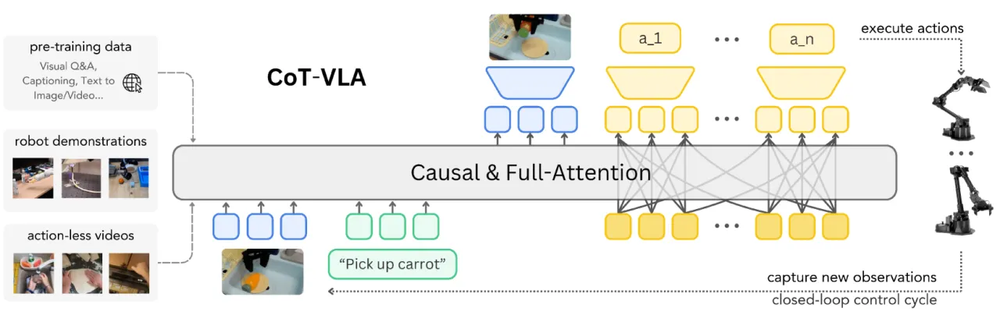
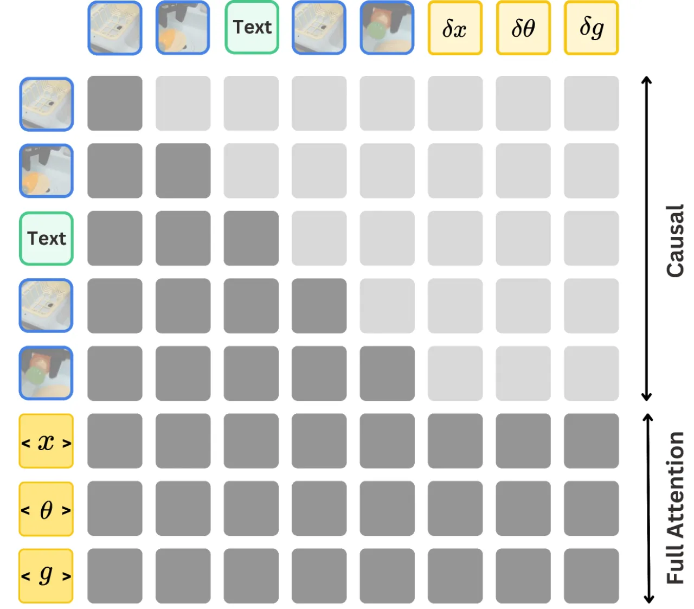
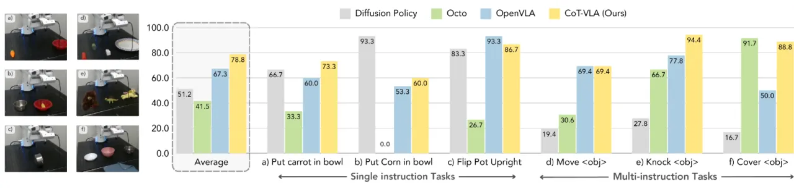
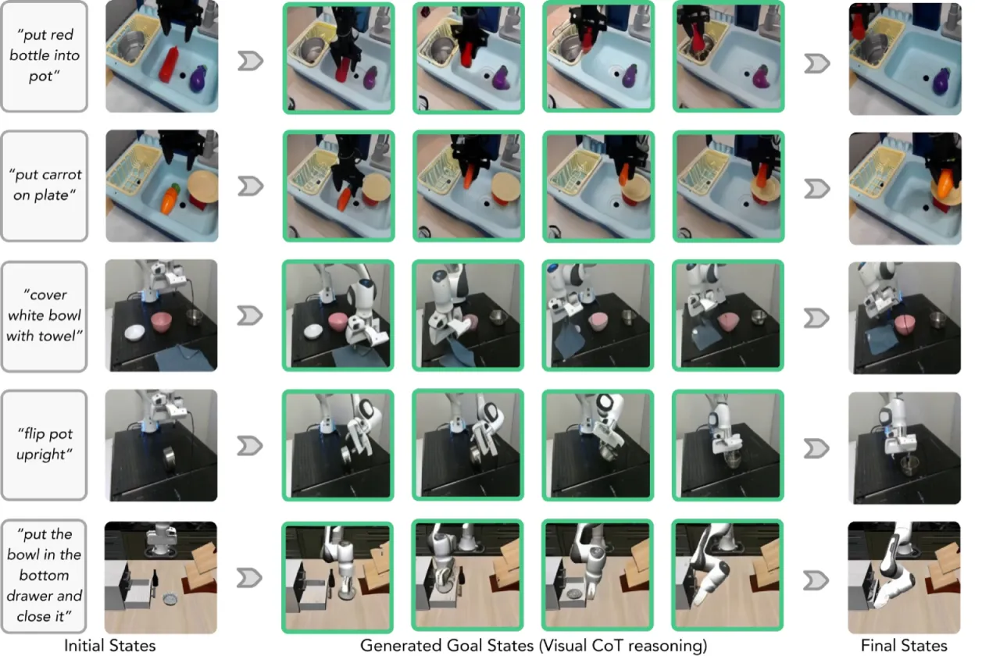
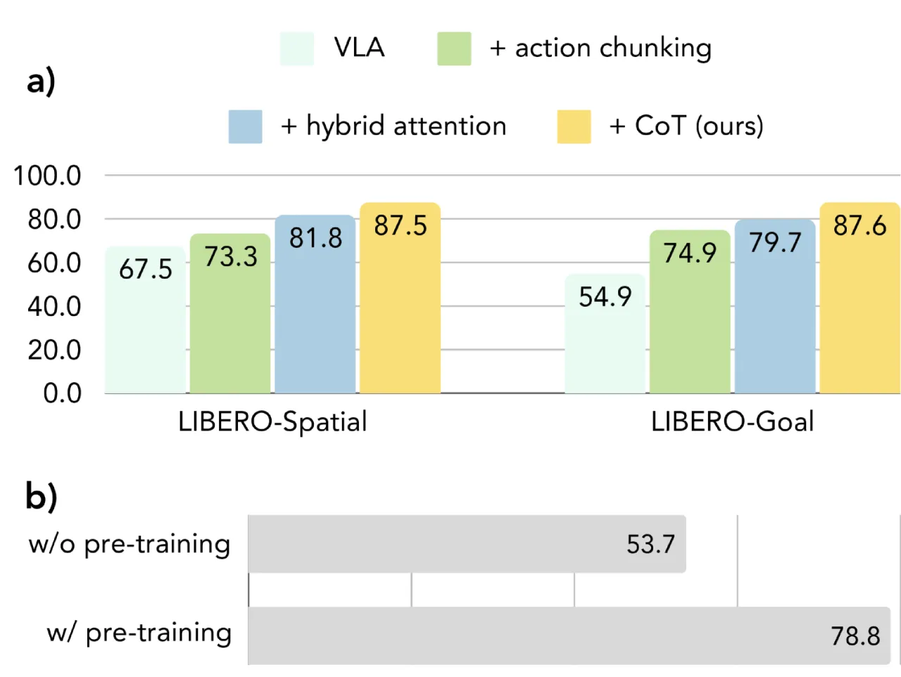

CoT-VLA 在视觉语言动作模型（VLA）中引入显式视觉思维链（visual chain-of-thought）推理：模型在生成动作序列之前，先自回归地预测若干步后的未来图像帧作为"子目标"，以此为中间推理步骤指导动作生成。基于 7B 参数的 VILA-U 骨干网络，CoT-VLA 在真实机器人操作任务上超越当时最优 VLA 基线 17%，在仿真 benchmark 上超越 6%。
当前主流 VLA 模型直接将语言指令与视觉观测映射到机器人动作，缺乏中间推理过程。这与人类"先在脑海中规划目标状态，再执行"的认知方式相悖，也限制了模型在复杂长视野任务中的泛化能力。
"We propose to incorporate explicit visual chain-of-thought (CoT) reasoning into VLAs by predicting future image frames autoregressively as visual goals before generating a short action sequence to achieve these goals."

核心洞察在于：若模型能生成"接下来 n 步后的场景应该是什么样"的图像，则这一预测本身就构成了对任务进度的显式规划。无动作标注的视频数据（如 EPIC-KITCHEN、Something-Something V2）同样包含丰富的视觉动态先验，可用于训练子目标图像生成能力，从而扩大有效训练数据规模。
CoT-VLA 以 VILA-U 为基础模型，采用"两阶段条件生成"：先以自回归 Transformer 生成子目标图像 token，再以 full-attention 并行解码 action chunk。训练分三阶段：通用预训练 → 机器人预训练（含无动作视频）→ 任务微调。

VILA-U 是一个统一的多模态基础模型，同时支持图像理解与生成。图像通过 RQ-VAE（Residual Quantization VAE）编码为 16×16×4 的 token 网格（残差深度为 4），在 256×256 分辨率下每帧共 256 个 token。深度 Transformer 逐层预测残差 token，从而在离散 token 空间内实现高质量图像生成。动作 token 则直接拼接在图像/文本序列之后，以统一的 Transformer 解码。

这一设计将自回归图像生成与并行动作解码统一在同一 Transformer 中，避免了双网络带来的额外复杂度。Action chunking（m=10）减少了闭环控制的决策频率，提升执行流畅度。
实验在两个平台展开：LIBERO 仿真 benchmark（4 个任务分组）与真实 Franka-Tabletop 机器人平台（6 个操作任务，含 3 个单指令与 3 个多指令任务）。同时在 Bridge-V2 数据集上评估跨任务泛化。基线包括 Diffusion Policy、Octo 和 OpenVLA。
| 模型 | Spatial | Object | Goal | Long | 平均 |
|---|---|---|---|---|---|
| Diffusion Policy | 78.3±1.1% | 92.5±0.7% | 68.3±1.2% | 50.5±1.3% | 72.4±0.7% |
| Octo (fine-tuned) | 78.9±1.0% | 85.7±0.9% | 84.6±0.9% | 51.1±1.3% | 75.1±0.6% |
| OpenVLA (fine-tuned) | 84.7±0.9% | 88.4±0.8% | 79.2±1.0% | 53.7±1.3% | 76.5±0.6% |
| CoT-VLA-7B（本文） | 87.5±1.4% | 91.6±0.5% | 87.6±0.6% | 69.0±0.8% | 81.13±0.6% |
CoT-VLA 在所有 4 个 LIBERO 子分组上均取得最优，尤其在长视野任务 LIBERO-Long 上提升显著（53.7% → 69.0%），体现了视觉子目标对长时序规划的帮助。
| 模型 | Visual | Motion | Semantic | Language |
|---|---|---|---|---|
| SUSIE | 30% | 10% | 20% | 40% |
| Octo | 35% | 10% | 0% | 40% |
| OpenVLA | 75% | 45% | 40% | 75% |
| CoT-VLA（本文） | 65% | 60% | 50% | 70% |
在 Bridge-V2 上，CoT-VLA 在 Motion 泛化（60% vs 45%）与 Semantic 泛化（50% vs 40%）上超越 OpenVLA，但在 Visual 与 Language 分类上略低于 OpenVLA（65% vs 75%，70% vs 75%）。



消融实验验证了每个组件的独立贡献：Action chunking 提供稳定基础；Hybrid attention 使动作预测更连贯；Visual CoT 带来最终的性能跃升，尤其在需要多步规划的任务中效果最为明显。
论文明确指出："Our method requires generating 256 image tokens before action tokens, leading to a 7×slowdown on average with an action chunk size of 10."。在实时控制场景下，推理延迟是主要瓶颈，限制了对高频控制任务的适用性。
VILA-U 的自回归图像生成在视觉细节上弱于扩散模型（如 DALL-E、Stable Diffusion）。子目标图像存在模糊或细节丢失，可能在需要精密视觉对准的任务中降低动作质量。论文在 OOD 泛化实验中也发现，使用生成子目标（20%/0%）远低于使用真实子目标（60%/40%）的成功率，印证了图像质量的瓶颈。
预测固定长度的动作序列（chunk）会在两个 chunk 交界处出现动作不连续，且缺乏逐步反馈调整能力。当任务需要精细的实时感知-动作闭环时，chunk 边界的抖动可能影响执行稳定性。
论文指出，模型在面对训练分布之外的全新视觉推理任务时泛化能力有限，部分原因在于计算约束（模型规模、生成 token 数）限制了推理深度与多样性。